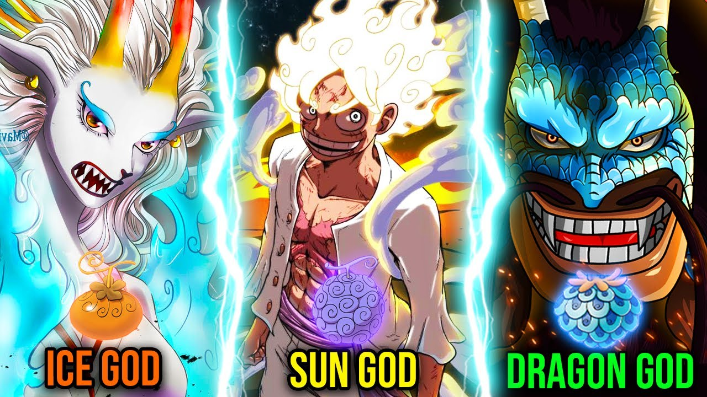
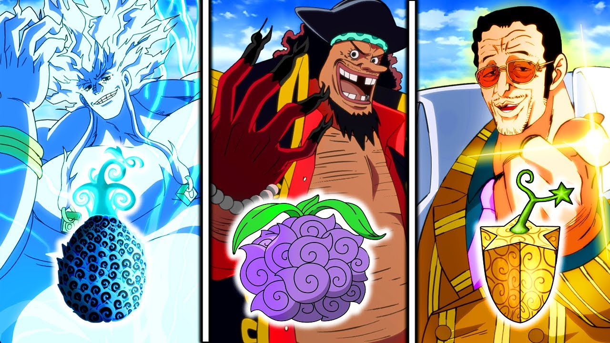

ZOAN
This specific kind of Devil Fruit enables the user to change into any type of animal or interspecies hybrid at will.
> Go to lists
PARAMECIA
Some quick example text to build on the card title and make up the bulk of the card's content.
> Go to lists

LOGIA
Some quick example text to build on the card title and make up the bulk of the card's content.
> Go to lists